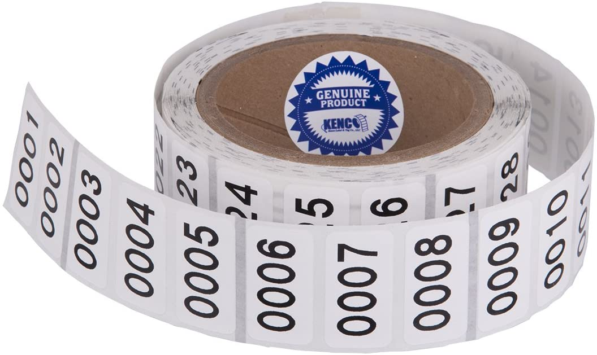
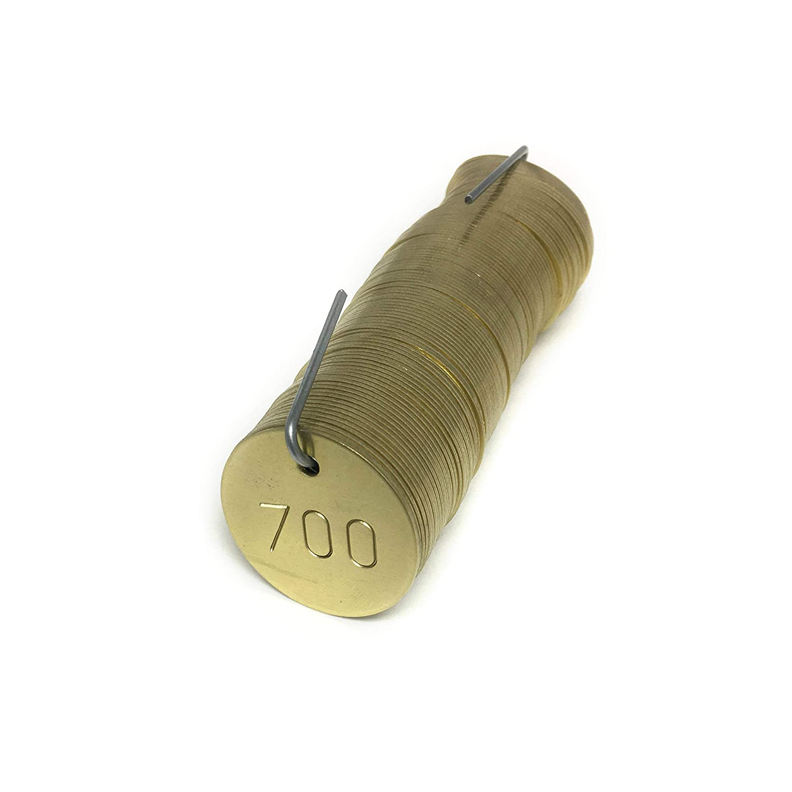
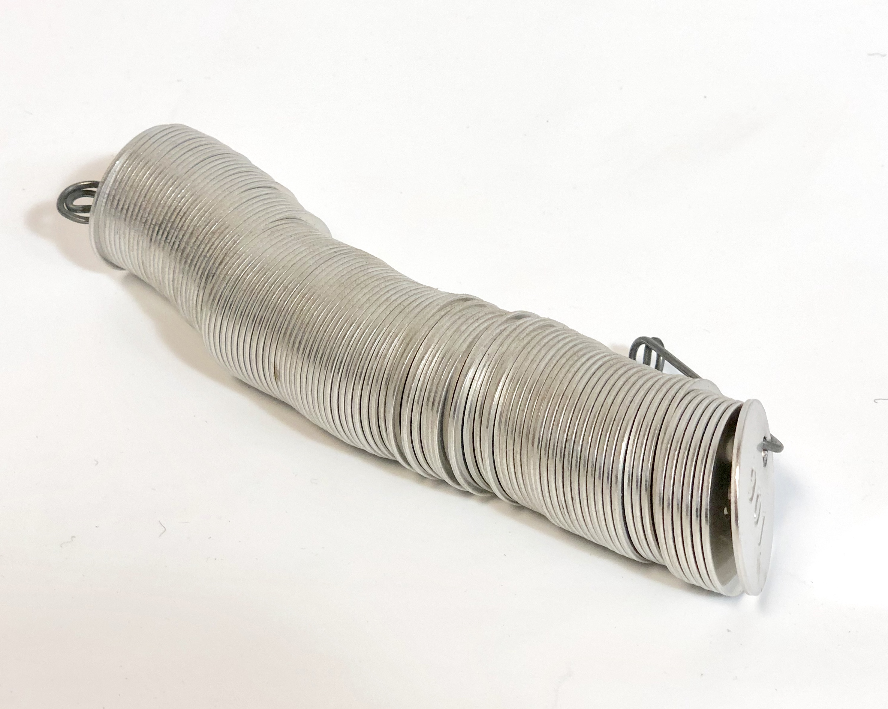

Physical Tag Options¶
Repairtagger requires the use of physical tags that will link the item to be repaired to the ticket in the app using a tag number.
As an example, if you were a Shoe Repair shop and a customer brought in a pair of shoes to be repaired, you would:
- scan a tag to create a ticket
- enter all the ticket information (such as customer, repairs the shoes need, etc.)
- attach the tag you scanned to the pair of shoes
{kind=link}
Now anytime you scan the tag attached to the pair of shoes, you can access all of the information associated with that repair.
There are a number of options available for physical tags that can be used with Repairtagger. You can use paper tags, stickers, reusable tags with numbers, reusable tags with barcodes, or you can even write a number on a piece of paper in a pinch!
Single Use tags - Paper¶
If you already use numbered paper tags in your shop, you can continue to use them with Repairtagger. The only restriction is that a tag number can only be in use on one ticket at a time.
Some examples of paper tags that would work well with Repairtagger are:
You could even use numbered stickers like these!
{kind=link}
How to scan a numbered tag¶
IMAGE of scan icon in footer
- Tap on the ‘scan’ icon in the footer
- Tap on the ‘Tag’ icon tab at the top of the page
- Position the lit box over the tag number.
- Hold it there until a button appears beneath the camera window with the tag number on it.
- Tap on the button. You will see a ‘Loading Tag’ message. If this tag number is in use on a ticket, you will be taken to the ticket. If it is not in use, a new ticket will be created.
IMAGE of OCR scanning a paper tag
Reusable tags - Numbered¶
Any tags with clearly written numbers can be used with Repairtagger.
You can use brass tags like these
{kind=link}
Or acrylic tags

Need LOTS of tags? Try tree tags!
{kind=link}
How to scan a re-usable numbered tag¶
IMAGE of scan icon in footer
- Tap on the ‘scan’ icon in the footer
- Tap on the ‘Tag’ icon tab at the top of the page
- Position the lit box over the tag number.
- Hold it there until a button appears beneath the camera window with the tag number on it.
- Tap on the button. You will see a ‘Loading Tag’ message. If this tag number is in use on a ticket, you will be taken to the ticket. If it is not in use, a new ticket will be created.
IMAGE of OCR scanning a reusable tag
Reusable tags - QR Codes¶
Repairtagger was originally built to use Repairtagger provided tags, with QR codes. In order to make the app as affordable and as simple to get started with as possible, tags are no longer provided through Repairtagger. If you are interested in using QR codes with the app, you will soon be able to order pre-designed tags. With these type of tags, volume drastically affects the price, so this is a great option for shops that do a very high volume (1000+ repairs a month). That being said, the scanning experience is extremely smooth and reliable with QR codes, so we highly recommend using this type of tag if possible. If you are interested in ordering/designing your own, get in touch with us - we will give you all the information you need to create Repairtagger compatible tags.
Note
A Bluetooth scanner capable of scanning QR codes can be used with Repairtagger. See the Reusable tags - Barcodes section for more details.
How to scan a QR code with the device camera¶
IMAGE of scan icon in footer
- Tap on the ‘scan’ icon in the footer
- Tap on the ‘Camera’ icon tab at the top of the page
- Position the camera over the QR code on the tag.
- When the QR code has been read, you will see a ‘Loading Tag’ message. If the tag number in the QR Code is in use on a ticket, you will be taken to the ticket. If it is not in use, a new ticket will be created.
IMAGE of QR scanning a reusable tag
How to scan a QR code with a Bluetooth Scanner¶
IMAGE of scan icon in footer
- Tap on the ‘scan’ icon in the footer
- Tap on the ‘Keyboard’ icon tab at the top of the page
- Scan the QR code with your scanner.
- When the QR code has been read, tap on ‘Load’
- You will see a ‘Loading Tag’ message. If the tag number in the QR Code is in use on a ticket, you will be taken to the ticket. If it is not in use, a new ticket will be created.
Reusable tags - Barcodes¶
Warning
A Bluetooth scanner that is connected to your device is required to be able to scan Barcodes into Repairtagger. A known compatible device can be found here: Bluetooth Scanner
Note
Most devices consider scanners to be a bluetooth keyboard, and this can prevent the device keyboard from coming up while the scanner is connected. This can be an issue on Android devices, but there is a setting to change this: Settings -> general management -> language and input -> physical keyboard -> show onscreen keyboard
How to scan a tag with a Barcode¶
IMAGE of scan icon in footer
- Tap on the ‘scan’ icon in the footer
- Tap on the ‘Camera’ icon tab at the top of the page
- Position the camera over the QR code on the tag.
- When the QR code has been read, you will see a ‘Loading Tag’ message. If the tag number in the QR Code is in use on a ticket, you will be taken to the ticket. If it is not in use, a new ticket will be created.
IMAGE of QR scanning a reusable tag
Or barcoded stickers!